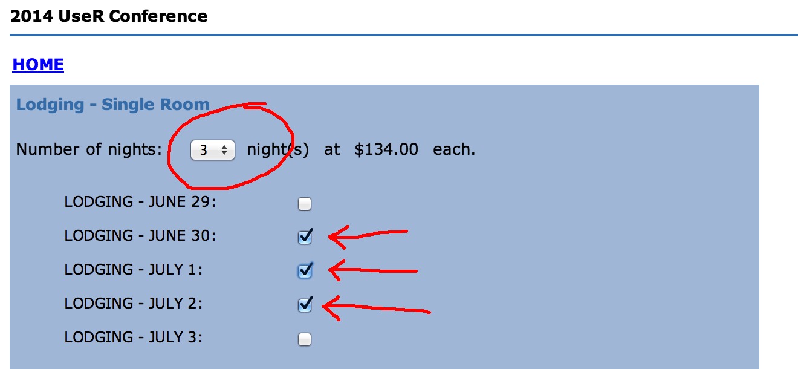

The R User Conference 2014
June 30 - July 3 2014
UCLA, Los Angeles, California

Latest News

Abstract submission closed
The deadline to submit abstracts for poster sessions and regular talks has passed and submissions are now closed. We received many great abstracts and the program committee has started the reviewing process.
Confirmed Speakers
We are excited to announce some of the invited speakers that have already confirmed to speak at useR! 2014 in Los Angeles! The line-up includes: John Chambers (S, R), David Diez (OpenIntro), Dirk Eddelbuettel (Rcpp, Debian), Jan de Leeuw (Journal of Statistical Software), Martin Mächler (R Core, R Foundation), Karline Soetaert (Solving Differential Equations in R)
Sponsor Invitation
Financial sponsorship of the conference is a way to give back to the R community. In so doing, your organization will gain visibility among prominent statisticians and in the large R user base. Funds from sponsors will be used to enhance the conference, e.g. to provide scholarships for participants who would otherwise be unable to attend, to help fund the social aspects of the conference, etc.
To learn about how to become a sponsor, types of sponsorship, etc, download the sponsor brochure: [pdf] [odt]
About the Conference
The annual useR! international R User conference is the main meeting of the R user and developer community. Its program consists of both invited and user-contributed presentations:
- The invited keynote lectures cover a broad spectrum of topics ranging from technical and R-related computing issues to general statistical topics of current interest.
- The user-contributed presentations are submitted as abstracts prior to the conference and may be related to (virtually) any R-related topic. The presentations are typically organized in sessions of either broad or special interest, which also comprise a "free" discussion format. Such a discussion format not only provides a forum for software demonstrations and detailed discussions but also supports the self-organization of the respective communities.

In 2014, the conference will be held at the campus of the University of California in Los Angeles (UCLA). The conference is being organized with support from the UCLA Statistics Department, the Foundation for Open Access Statistics and the Los Angeles R user group. The organizing committee consists of:
- Chair: David McArthur – UCLA School of Medicine
- Yunyun Dai – UCLA School of Education
- Jan de Leeuw – UCLA Department of Statistics
- Amelia McNamara – UCLA Department of Statistics
- Katharine Mullen – UCLA Department of Statistics
- Jeroen Ooms – UCLA Department of Statistics
- Szilard Pafka – Los Angeles R User’s Group
- Tim Triche – University of Southern California
- Joshua Wiley – UCLA Department of Psychology
The program committee consists of:
Sponsors
Platinum


Gold

Silver
Bronze


Important Dates
| Event | Date |
|---|---|
| Tutorial Submissions Deadline | 2014-01-05 |
| Abstract Submissions Deadline | 2014-04-10 |
| Notification of Acceptance | 2014-04-28 |
| Early Registration Deadline | 2014-05-10 |
| Registration Deadline | 2014-05-25 |
| Late registration deadline | 2014-06-15 |
| Tutorials | 2014-06-30 |
| Conference Start | 2014-07-01 |
| Conference End | 2014-07-03 |
Registration
We are pleased to declare registration open at this time! By clicking on this hyperlink you will be leave this website and be interacting with a secure credit-card processing site to complete this process. All major credit cards are honored; transactions must be in US dollars. We regret that the Conference is unable to accept cash or personal checks or money orders or purchase orders.
| Student | Academic | Industry | |
|---|---|---|---|
| Early | $125 | $250 | $275 |
| Regular | $150 | $300 | $425 |
| Late | $175 | $350 | $475 |
| On-Site (by availability) | $250 | $500 | $675 |
The registration page allows for both purchasing conference tickets as well as on-campus housing within a single order. The latter is optional. When purchasing on-campus housing, please double check that the value in the "Number of Nights" dropdown menu matches the number of selected checkboxes. Unfortunately the form of our vendor does not seem to enforce or verify this and only charges for the number of nights that were selected in the dropdown menu. Obviously you can only stay as many nights as you purchased :-)
If your institution or business permits you to pay using their funds, then please send the institutional or business check promptly to ensure that your registration is complete. If our office does not receive a valid check for payment in full before 6/1/14 or if it is dishonored in any way then your registration will be canceled without notice. Full payment of all charges is required; payment of some charges but not others using this method is not permitted. The check must be made out in US dollars only to "Regents of the University of California" with memo field stating "UseR!2014 registration for __your name___" and receipt number. The mailing address is UCLA Department of Statistics attn. J Valenzuela, Box 951554, 8125 Math Sciences Building, Los Angeles, CA 90095-1554 USA. By selecting the "Pay with institutional check" option you are agreeing to follow the above requirements in full.
Funding
Invited Talks
Tutorials
| Title | Presenter |
|---|---|
| Applied Predictive Modeling in R | Max Kuhn |
| Applied Spatial Data Analysis with R | Virgilio Gomez Rubio |
| Beautiful world maps from country-referenced data using rworldmap | Andy South |
| Bioconductor | Martin Morgan |
| C++ and Rcpp11 for beginners | Romain Francois |
| Data manipulation with dplyr | Hadley Wickham |
| Dynamic Documents with R and knitr | Yihui Xie |
| An Example-Driven Hands-on Introduction to Rcpp | Dirk Eddelbuettel |
| Graphical Models and Bayesian Networks with R | Søren Højsgaard |
| Interactive data display with Shiny and R | Garrett Grolemund |
| Interactive graphics with ggvis | Winston Chang |
| Introduction to data.table | Matt Dowle |
| Managing Data with R | Bob Muenchen |
| Nonlinear parameter optimization and modeling in R: A tutorial | John Nash |
| Programming with Big Data in R | Drew Schmidt |
| Simulating differential equation models in R | Thomas Petzoldt |
Schedule
Abstract Book
UCLA Campus

In 2014, the conference will be held in Los Angeles, at the University of California-Los Angeles (UCLA). Los Angeles is the second most populous city in the United States, following New York City. UCLA was one of two original public universities in California, following UC Berkeley. It's a large university campus, with about 40,000 students (30,000 undergraduates, 10,000 graduate students) and 4,000 faculty members. Because of its location in Los Angeles, UCLA has been featured many times in movies and TV shows. UCLA is located approximately seven miles from the Pacific ocean, and eight miles from Hollywood.
Weather forecast
The average temperature in the immediate vicinity during the conference is expected to be a very comfortable 73 degrees Fahrenheit (23 degrees Celsius). Elsewhere across greater Los Angeles during the same period we anticipate 79 degrees Fahrenheit (26 degrees Celsius). Daylight lasts 14.5 hrs (sun screen is recommended when you are out of doors). Evenings will cool to about 63 F (17 C). Light jackets or sweaters should be more than adequate at nighttime.
Though weather world-wide has lately been unsettled, we can state that the average probability of precipitation during the Conference is estimated to be a mere 4%. The relative humidity typically is mildly humid, rarely dropping below 48% (comfortable), or exceeding 95% (very humid). Typical wind speeds vary from 0 mph to 14 mph (calm to moderate breeze).
Recreation
Included with your paid Conference registration is admission on an individual basis to all UCLA campus recreation facilities. The John Wooden Center and Sunset Canyon Recreation Center include swimming pools, weight rooms, tennis courts, racquetball courts and handball courts.
Parking
Parking permits are required at all times for all vehicles parked on campus. The fee is USD 12.00 per vehicle per day. Vehicles without permits are subject to ticketing and towing. You may purchase parking permits in advance through UCLA Conference Services, or at a campus parking kiosk upon arrival.
Smoking policy
UCLA is a non-smoking environment. Use of cigarettes, cigars, chewing tobacco and all other tobacco products including electronic cigarettes is prohibited on UCLA's campus and at sites owned or leased by the university. "Tobacco use and exposure to secondhand smoke remain the leading causes of preventable disease and death worldwide," the UCLA Chancellor has noted in an open letter about this recent policy change. UCLA joins with hundreds of colleges and universities nationwide that have adopted tobacco-free or smoke-free policies.
Alcohol policy
All participants shall abide by University laws and policies concerning possession and consumption of alcoholic beverages. Possession of open or visible containers anywhere except within an assigned room where the door is closed (for those guests older than 21 years of age) or at a UCLA catered event is strictly prohibited. All regulations governing controlled substances and possession of paraphernalia for intended or implied use of controlled substances are observed in full.
Harassment policy
UseR!2014 at UCLA is dedicated to providing a conference free from harassment for everyone, regardless of gender, gender identity and expression, sexual orientation, disability, physical appearance, body size, race, age or religion. We do not tolerate harassment of conference participants in any form. Harassment includes offensive verbal comments related to gender, gender identity and expression, sexual orientation, disability, physical appearance, body size, race, religion, sexual images in public spaces, deliberate intimidation, stalking, following, harassing photography or recording, sustained disruption of talks or other events, inappropriate physical contact, and unwelcome sexual attention. Sexual language or imagery is not appropriate for talks, posters, exhibitors’ displays, or social and dining events. Violators may be sanctioned, including being expelled from the conference without a refund, at the complete discretion of the Conference Organizing Committee. For more information, resources, and official policy concerning this topic, see the UCLA website.
Lodging
Campus Housing
UCLA offers modern rooms featuring air-conditioning, cable TV, complimentary wireless high-speed Internet connections, in-room telephone, two twin beds, a private or shared bathroom between two rooms, and daily maid service. The accommodations are conveniently located adjacent to meeting rooms and large dining facilities. There are 24-hour front desk services for check-in, messages, and information. All rooms are non-smoking. A designated number of sleeping rooms also meet Americans with Disabilities Act (ADA) requirements.
All accommodations are sold on a “package plan” basis and include rooms, daily meals, and use of UCLA’s Olympic-quality recreational facilities. Meals are all-you-care-to-eat. The University of California Los Angeles is a smoke-free facility.
Nearby Hotels
Discounted conference rates have been negotiated with several high-quality hotels in the Westwood area including the following:
- Luxe Sunset Boulevard Hotel: Special conference pricing of $185 for a Superior room, $229 for a suite. Parking is $18; shuttle service will be available. Distance from conference = 1.2 miles, difficult for pedestrians due to hills and street traffic.
- Hotel Angeleno: Special conference pricing of $159 single or double occupancy. Complimentary parking and shuttle. Distance from conference = 1.3 miles, difficult for pedestrians due to hills and street traffic.
- Royal Palace Westwood Special conference pricing of $159 for single queen bed, $169 for single king bed, $179 for two beds. Free parking, no shuttle service. Distance from conference = 1.4 miles, moderately strenuous for pedestrians due to hills and construction.
If you choose to reserve a room at one of these fine facilities, do call their offices directly as the internet pricing may or may not reflect the discounted conference rate. All of the above rates are subject to a 14% hotel room tax, as are all hotels and motels in this area.
Should you choose to stay at one of these establishments or any of several dozen others in the Westwood, Santa Monica, Culver City or Beverly Hills areas which surround the UCLA campus, please exercise care when mapping your overall itinerary as the patterns of traffic in this hilly area can be famously demanding. This is especially true during rush-hour which happens to extend over a pair of several-hour-long periods each day. What may appear as an easy jaunt on a map of the area in two dimensions can pose unexpected challenges to the unwary. The UCLA campus is currently undergoing substantial construction and even the most current maps may not show necessary walking and driving detours. Do also note that daytime parking at the Conference will be charged, that meals are available for purchase at the Conference Center through their meal ticket system (all meal tickets purchased on an individual basis are subject to the 9% California Sales Tax). Numerous restaurants can found throughout the region, and many other amenities are available in both the immediate vicinity and across the greater Los Angeles area. If this is your first visit to Los Angeles, do explore local travel agents in your hometown as well as the internet for further information.
Travel Information
The most convenient airport for accessing UCLA is the Los Angeles International Airport (LAX). From LAX, a variety of transit options are available. For $10 may we recommend the Flyaway Non-Stop Bus Service to and from LAX. A shuttlebus is available hourly, with drop-off at the edge of the UCLA campus, approximately a 12-minute walk to the Conference Center. Be careful to choose the shuttle labeled "Westwood" as there are several other destinations serviced by other FlyAway shuttle busses. Besides flyaway, numerous other commercial shuttles, taxi and car rental services are available around the clock at LAX.
When arriving at the international section of your arrival airport, please note that you may be subject to delays in clearing United States Customs. We are informed that the average time required by Customs and Immigration is between 1 to 2 hours (and this process often may be longer) before you are permitted to leave the secure area.
While the principal airport serving this area is LAX, one can also enter the area conveniently by way of Bob Hope International Airport (BUR) located in Burbank, approximately a half-hour drive from UCLA. An additional airport is Long Beach Airport (LGB), a little over a half-hour drive from UCLA. Both are serviced by numerous shuttles and taxis.
Before leaving home you may wish to consult the interactive campus map. Search for “Carnesale Commons” and “Parking Structure 32" for more details.
Social Program
The opening evening of the Conference, June 30, will feature an outdoor wine and hors d'oeuvres reception. This is your opportunity to mingle with with be a very broad international representation of R users of all stripes and sizes and to meet the conference speakers and members of the Program Committee and Organizing Committee for one-on-one conversation. There is no additional charge for this reception though you must be registered to be admitted.
The Conference Banquet is scheduled for the evening of July 1. It will be an outdoor catered event within close walking distance of the Conference Center. This event has an additional charge for each attendee in addition to the Conference registration fees, but is open to family members and children. More details about this Banquet, and the menu, will be posted here shortly.
Planning is moving ahead at this moment for a *special event for women attendees* of the Conference, specifically to allow female R developers to get connected and learn about each other's programming work. Watch this space closely for further announcements.
If you have an interest in hosting a particular social event during the Conference, kindly contact the Organizing Committee with details at dmca[at]ucla.edu as soon as possible. We will attempt to accommodate all requests, though certain restrictions apply. Each event will be described in this space as they are confirmed. Do watch this space closely.
Dining in Los Angeles
The number of full service restaurants in the Los Angeles area is close to 10,000, representing many hundreds of different food styles. Regrettably, you probably won’t have enough time to savor them all. If you’re interested in sampling something you’ve never had the opportunity to sample before or just missing your favorite dish, it is highly likely that a particular gastronomic fare will be available somewhere in the area. There are many internet resources providing detailed advice on this matter, often with exact menus, prices and photos: search the keyword phrase “Los Angeles restaurant guide” for starters.
Major attractions for the family
Los Angeles is world-renowned for its wealth of entertainment. This website cannot begin to do justice to the extraordinary range of good things available in this area. Readers are encouraged to search the many internet resources devoted to this topic: for example, try the keyword phrases such as “Los Angeles attractions” and “Los Angeles free events”
Just a short walk from the Conference Center, UCLA is the home of the renowned Fowler Museum, exploring global arts and cultures with an emphasis on works from Africa, Asia, the Pacific, and the Americas—past and present. Admission is free though the Museum is closed Mondays and Tuesdays.
A few minutes walk further into the adjacent community of Westwood is the Hammer Museum, a world-class unique, cutting-edge arts institution that connects the classics and the contemporary through its varied collections, wide-ranging exhibitions, and provocative programs. Admission is free though the Museum is closed Mondays.
Close to the UCLA campus is the world-famous J. Paul Getty Museum at the Getty Center, which houses European paintings, drawings, sculpture, illuminated manuscripts, decorative arts, and European and American photographs in a spectacular architectural setting. Admission is free though the Museum is closed Mondays.
Conference staff will be delighted to provide campus maps, area maps and advice about attractions in the immediate area and across the greater Los Angeles basin. Our Conference Services desk will be staffed full-time during the Conference, in the main foyer of Carnesale Commons.